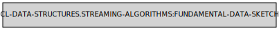

Streaming Algorithms Reference
This section contains reference of the data sketches.
Symbols in the package CL-DATA-STRUCTURES.STREAMING-ALGORITHMS:
BLOOM-FILTER
Lambda List:
(RANGE &KEY HASH-FN WIDTH DEPTH KEY HASHES DATA-SKETCH)
Arguments:
- RANGE, Input for the creation of the bloom filter.
- SPACE, What is the bloom vector size?
- HASH-FN, Hashing function. SXHASH will do for strings.
- COUNT, How many bits are used for each item?
- KEY, Function used to extract value for hashing.
- HASHES, Optional hashes vector. Needs to be supplied in order to ensure that the same hash values are generated between different filters.
- DATA-SKETCH, Instead of the bits and the hash-fn, the user can pass a data-sketch argument.
Description: Creates bloom filter out of elements in the range. Bloom filter is a memory efficient data structure allowing to check if an item is absent from the range. If AT returns nil, the item is certainly absent. If AT returns T item either present or not.
Returns: Instance of the fundamental-data-sketch class. Use cl-ds:at to check if element is present. False positives are possible, false negatives are not possible.
Exceptional situations:
- Will signal a TYPE-ERROR if either SPACE or COUNT is not integer.
- Will signal a CL-DS:ARGUMENT-VALUE-OUT-OF-BOUNDS if either SPACE or COUNT is not above 0.
- Will signal a TYPE-ERROR if HASH-FN is not funcallable.
- Will signal a TYPE-ERROR if HASHES is not (OR NULL (SIMPLE-ARRAY FIXNUM (* 2)).
APPROXIMATED-COUNTS
Lambda List:
(RANGE &KEY HASH-FN DEPTH WIDTH KEY HASHES DATA-SKETCH)
Arguments:
- RANGE, Object to aggregate.
- HASH-FN, Hashing function. SXHASH will do for strings.
- SPACE, Positive integer. Size of the counters array
- COUNT, Number of hashing functions used.
- DATA-SKETCH, Instead of the bits and the hash-fn, the user can pass a data-sketch argument.
Description: Calculates estimated counts using Min-Count sketch algorithm. This requires only a constant amount of memory.
Returns: Instance of the fundamental-data-sketch class. Use CL-DS:AT to extract count estimate for element from it.
Exceptional situations:
- Will signal a TYPE-ERROR when either COUNT or SPACE is not integer.
- Will signal a TYPE-ERROR when HASH-FN is not funcallable.
- Will signal a TYPE-ERROR when HASHES is not either NIL or (SIMPLE-ARRAY FIXNUM (*)).
- Will signal a CL-DS:ARGUMENT-VALUE-OUT-OF-BOUNDS if either COUNT or SPACE is not above zero.
Notes:
- Quality of the estimate directly depends on DEPTH and WIDTH.
- Sensitive to a hash function. Large avalanche factor is very helpful.
APPROXIMATED-SET-CARDINALITY
Lambda List:
(RANGE &KEY HASH-FN KEY DATA-SKETCH)
Arguments:
- RANGE, Object to aggregate.
- HASH-FN, Hashing function. SXHASH will do for strings.
- DATA-SKETCH, Instead of the bits and the hash-fn, the user can pass a data-sketch argument.
- KEY, A function used to extract value from each element.
Examples:
(LET ((DATA
(CL-DATA-STRUCTURES:XPR (:I 0)
(WHEN (< I 500000)
(CL-DATA-STRUCTURES:SEND-RECUR (RANDOM 99999999999) :I (1+ I))))))
(PROVE.TEST:OK
(< 490000
(CL-DATA-STRUCTURES:VALUE
(CL-DATA-STRUCTURES.STREAMING-ALGORITHMS:APPROXIMATED-SET-CARDINALITY
DATA :HASH-FN
#'CL-DATA-STRUCTURES.STREAMING-ALGORITHMS.HYPERLOGLOG:HASH-INTEGER))
510000)))Description: Calculates the estimated set cardinality using the HyperLogLog algorithm. This requires only a constant (and modest) amount of memory.
Returns: Instance of the fundamental-data-sketch class. Use CL-DS:VALUE to extract estimate from it.
Exceptional situations:
- Will signal a TYPE-ERROR if HASH-FN is not funcallable.
Notes:
- This algorithm gives a solid estimate for large sets, not so good for small sets.
- Sensitive to a hash function. Large avalanche factor is very helpful. Needs all 64 bits so sxhash won't be fine.
- Can be used to (for instance) estimate number of keys before creating a hash table. A good estimate of size minimizes rehashing and therefore reduces both memory allocation and time required to fill the hash table.
UNION
Lambda List:
(FIRST-SKETCH &REST MORE-SKETCHES)
Description:
Creates new data-sketch from the provided. Can be used to join sketches built on different data chunks.
CLEAN-SKETCH
Lambda List:
(FUNCTION &REST ARGUMENTS &KEY HASHES HASH-FN DEPTH WIDTH)
Description:
Creates a new, empty data-sketch that would be produced by the function. New data-sketch can be cloned and passed as :data-sketch. This allows to keep compatibility between results of call to the streaming function.
FUNDAMENTAL-DATA-SKETCH

Description: The base class of all data sketches. Instances of this class can be passed to streaming algorihms as initial states, cloned and combined into unions.